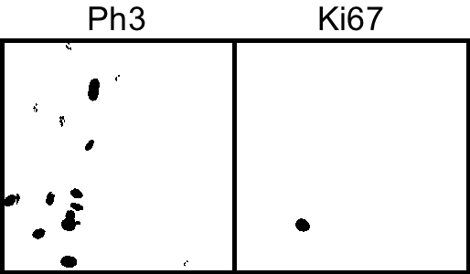

Cell scoring
Extension of the previous demo. Widefield fluorescent images where cells are expressing markers for proliferation (green) and death (red).
Markers:
- Blue - DAPI Nuclear marker.
- Green - Ki67 cell proliferation marker.
- Red - Ph3 cell death marker.

Aim
Determine the proportion of total cells that express different markers.
1. Open image: "[...]/Images/Widefield/Cell Scoring and Cycle/Control.tif"
2. Split the channels so we can work on them individually
Image → Color → Split Channels
Determine total cell number
3. Segment the DAPI (blue) channel by thresholding.
Image → Adjust → Threshold...
Select "Li" AutoThreshold method.
4. Split touching cells with a Watershed binary morphological filter.
Process → Binary → Watershed

5. Use connected components (or Particle Analysis in the ImageJ world) to count number of cells. We set a minimum size filter in order to discard any small dots derived from noise that surpass the threshold segmentation.
Analyze → Analyze Particles...


Crude approach to determine the number of cells expressing the Ki67 cell proliferation and Ph3 cell death markers
We could use a similar approach to that used for total cell number except that we don't need to use the watershed morphological filter to split cells.
6. Segment the Ki67 (green) and Ph3 (red) channel by thresholding.
Image → Adjust → Threshold...
Select "Li" AutoThreshold method.

7. Particle analysis to count number of cells.
Analyze → Analyze Particles...

Improving precision
This process works reasonably for the two markers; however, our lower size cutoff does exclude some of red expressing cells because the marker isn't expressed strongly or throughout the entire nuclei and thus doesn't make the size cutoff. More generally, it is often the case that some markers such as a DAPI marker are simply more reliable, hence it would be nice if we could use the DAPI segmentation as a 'template' to find to find cell that express other markers.
Geodesic reconstruction can do exactly this. We will make use of the third-party MorphoLib plugin for morphological operators.
8. Run the Geodesic Reconstruction plugin using each segmented marker image(i.e., binary images for Ki67 and Ph3) and the segmented DAPI image as the mask.
7. Particle analysis to count number of cells in the reconstucted images.
Analyze → Analyze Particles...